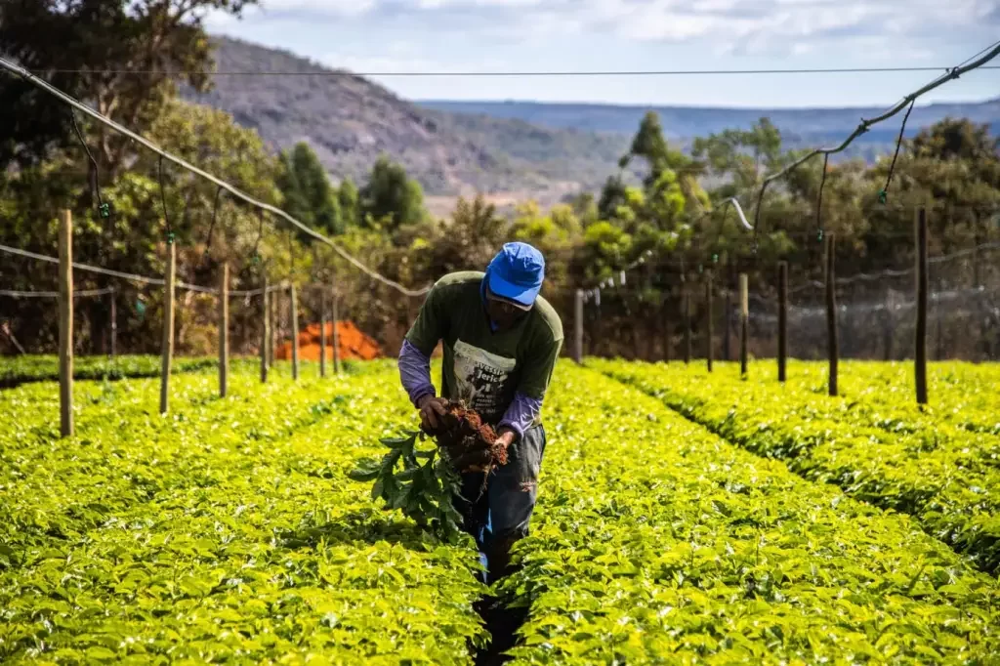

Nossa História
Somos uma cooperativa dedicada a fornecer alimentos orgânicos de qualidade para nossos clientes. Começamos nossa jornada há mais de uma década, quando dois jovens estudantes decidiram se unir em prol de uma produção sustentável e saudável.
Nossa Missão
Nossa missão é promover a agricultura sustentável, respeitando o meio ambiente e valorizando o trabalho dos nossos agricultores. Queremos proporcionar alimentos frescos e saudáveis para todos os nossos clientes, contribuindo para um estilo de vida mais consciente e equilibrado.